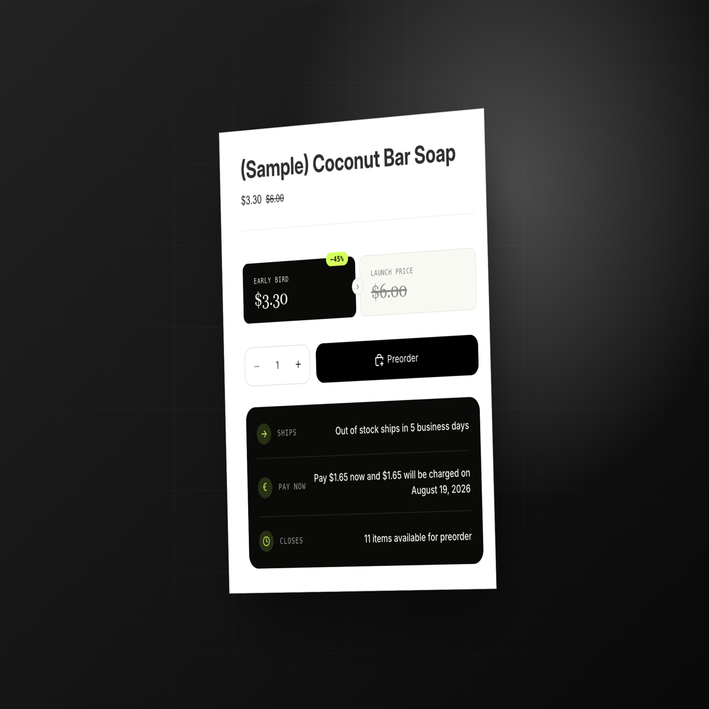

Shopify · Front-end implementation · Case study 01
Preorder Campaign Widgets
Responsive storefront widgets that keep preorder pricing, savings, and fulfillment messaging aligned with the selected variant and active campaign.

Support scenario
The existing Essential Preorder app needed clearer product-page messaging at the moment a customer decides whether to buy. The storefront experience had to explain preorder savings, pricing, campaign timing, and fulfillment context without showing irrelevant information for a variant that was not available for preorder.
My role
I worked on the front-end implementation of the new preorder widget feature: shaping how campaign data appears on the product page, accounting for variant state, and making the presentation adaptable across Shopify themes.
Constraints
- The message must appear only when the selected product variant is available for preorder.
- Prices, discounts, and scheduled end dates must come from the active campaign rather than hardcoded storefront copy.
- The layout must remain clear on desktop and mobile product pages.
- The implementation must work with Dawn and Horizon and remain adaptable to other themes whose product templates are not heavily customized.
- Merchants need to control placement through Shopify’s Online Store editor.
Implementation approach
- Connect visibility to variant state. The widget is conditional so customers do not see preorder messaging for an ineligible selection.
- Use the active campaign as the source of truth. Pricing, discount, and schedule values are populated from campaign data instead of duplicated manual values.
- Separate the widget choices. A merchant can use the preorder discount widget, the improved description widget, or both based on the storefront need.
- Design for responsive theme surfaces. The visual hierarchy keeps key pricing and fulfillment information legible across screen sizes.
- Keep placement merchant-controlled. Widget placement is managed through Shopify’s Online Store editor rather than fixed to a single template position.
Technical details
The feature combines campaign-driven data, selected-variant checks, responsive front-end styling, and Shopify theme integration. The current documented support covers Dawn and Horizon, with adaptability for other themes when their product templates have not been heavily customized.
Campaign-level custom HTML, CSS, JavaScript, and Liquid were documented as future support, not as completed functionality.
Practical value
The resulting storefront component gives customers relevant preorder information at the point of purchase while giving merchants flexible widget choices and editor-managed placement. It reduces the risk of displaying stale hardcoded campaign values and keeps the message tied to the customer’s actual variant selection.
Need someone who can investigate the issue and explain the fix?
I’m available for remote Technical Support Engineer opportunities with SaaS and e-commerce teams.